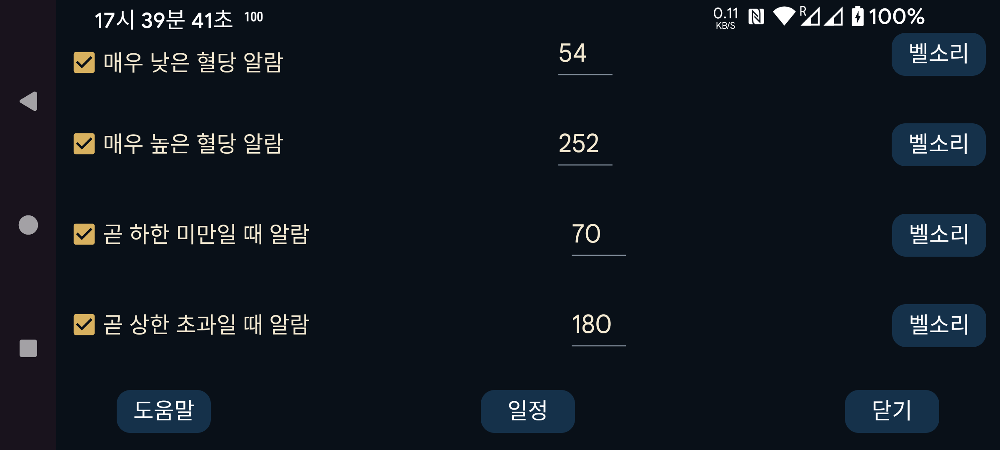

저혈당 알람보다 더 낮은 임계값에서 울리는 두 번째 저혈당 알람입니다.
고혈당 알람보다 더 높은 임계값에서 울리는 두 번째 고혈당 알람입니다.
하강 중인 혈당이 곧 이 값 아래로 떨어질 것으로 예측되면 알람을 울립니다.
상승 중인 혈당이 곧 이 값을 넘을 것으로 예측되면 알람을 울립니다.
하루 중 특정 시각에 특정 프로필을 활성화하도록 예약합니다. 이를 이용해 낮과 밤에 서로 다른 혈당 임계값이나 벨소리를 사용하거나 밤에는 혈당값 말하기를 자동으로 끌 수 있습니다.